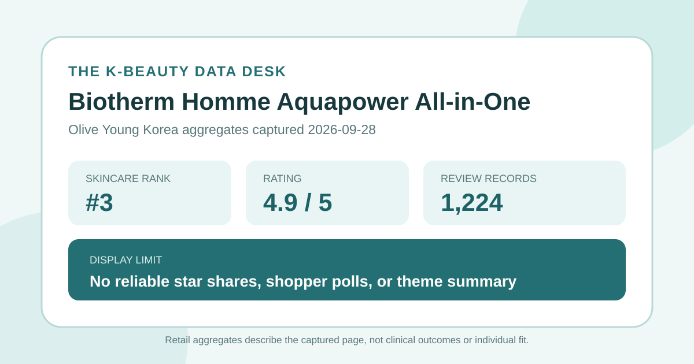
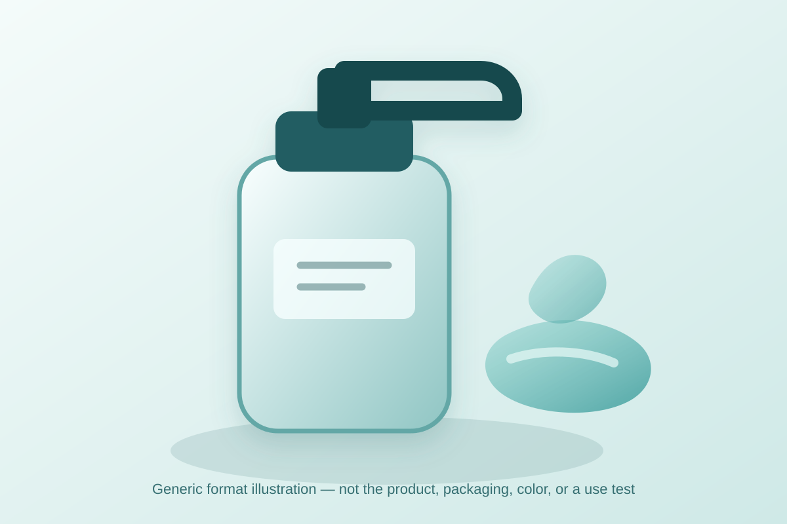

Data captured September 28, 2026. This is an independent analysis of retailer-displayed product information and anonymous aggregate review signals. I did not test the product, and no individual review, reviewer identity, product photograph, or user photograph is copied or translated.

The short version: Biotherm Homme Aquapower All-in-One appeared at number 3 in the live skincare sales ranking on Olive Young Korea. The product header displayed 4.9 out of 5 from 1,224 review records, and the detailed review tab repeated the 1,224-record total. That is useful evidence of a high-scoring, established retail feedback pool—but not proof of hydration, soothing, convenience, suitability, or clinical performance.
A 4.9 average across 1,224 displayed records is a strong storefront signal. The base is large enough that one unusually positive or negative score would not meaningfully determine the rounded average. It is reasonable to say that the linked rating pool was collectively very favorable on the capture date and that the item had more feedback depth than a newly launched listing with only a few records.
The number still compresses many possible patterns. A rounded 4.9 could come from several different mixes of five-, four-, and lower-star selections. Because the captured review interface did not reliably expose the distribution, this article does not reverse-engineer shares from the average. It also does not convert 4.9 into a satisfaction percentage. Those calculations would create precision that the source screen did not provide.
Retail review pools can combine feedback attached to options or configurations linked under one product page. The title itself referenced both a 50 ml travel configuration and a 200 ml option. The 1,224 records should therefore be read as the page's linked review total, not as proof that every entry concerns the same exact size, price, bundle, packaging, seller condition, or purchase date.
Many Olive Young review panels expose rounded skin-type, concern, and irritation responses, plus an automated summary of a recent subset. This capture did not provide a reliable version of those fields. The absence matters: there is no defensible basis for saying which skin type was most represented, which concern led, how many respondents selected a gentle response, or which topics appeared most often.
The article also does not substitute individual review text for missing aggregate data. Doing so would change the method, create a non-representative sample, and risk copying personal wording or identities. A clean “not available” is more useful than a poll reconstructed from a few visible comments. It keeps the conclusion aligned with what the page actually exposed.

The retailer categorized the item under lotion and all-in-one skincare. That supports a broad format description, not a firsthand sensory review. I did not handle, dispense, smell, spread, or layer the product. I cannot confirm whether it is watery, creamy, gel-like, tacky, fragranced, quick to absorb, matte, glossy, comfortable after shaving, or compatible with sunscreen.
The phrase “all-in-one” is best treated as a product-positioning label. It does not prove that one step supplies everything every routine needs, nor does it define a standard set of functions. A shopper might use such a format for convenience, but the appropriate number of steps still depends on the current label, environment, preferences, sunscreen use, tolerance, and any professional guidance relevant to a skin concern.
The local visual deliberately avoids a recognizable package, logo, retailer photograph, or formula-specific color. Its only purpose is to break up the article and communicate a generic pump-dispensed lotion-gel concept. It should not be used to predict the real product's appearance or feel.
Third place shows strong recent sales visibility within one retailer's skincare ranking at one moment. It does not mean third-best skincare overall or third-best for a particular person. Ranking can change with stock, promotion, placement, season, gifts, discounts, advertising, and the category filter itself.
The captured listing appeared during a promotional retail period and showed multiple size or set choices. Those commercial details may contribute to momentum independently of formula experience. Rank and review depth answer different questions: rank reflects current sales prominence, while 1,224 records reflect accumulated linked participation. Neither reveals causation, repeat-purchase rate, verified buyer identity, or comparative effectiveness.
The page heading referenced a 50 ml travel configuration and a 200 ml option. The header showed a ₩30,000 reference price and prices starting at ₩20,100, plus a starting unit-price display based on the selected offer. Because an option had not been selected in the capture, those numbers should not be treated as the price of every configuration.
Before comparing value, check the exact option, total volume, included extras, current seller, coupon rules, stock, shipping, and checkout total. A smaller travel size and a larger bottle serve different purposes, and the lowest displayed starting price may apply only to one option. Price, gifts, and availability can change after the capture date.
This analysis did not independently capture and reconcile a complete current ingredient list for every size and regional option. It does not estimate ingredient concentrations or claim that the formula is fragrance-free, alcohol-free, non-comedogenic, hypoallergenic, suitable after shaving, or appropriate for acne, eczema, rosacea, allergy, or another medical concern. The current package and authorized regional label are the relevant sources for formula and directions.
“Aquapower,” “Homme,” and “all-in-one” identify how the product is marketed. They do not establish a measured hydration duration, biological mechanism, gender-specific necessity, barrier repair, or treatment outcome. A high retailer average cannot verify those ideas. If skin is broken, actively inflamed, recently treated, or under medical care, aggregate ratings should not direct care.
The captured header displayed 4.9 out of 5 from 1,224 linked review records. That is a favorable aggregate retailer signal, not proof of individual fit or product performance.
The captured review interface did not expose a reliable star-by-star distribution. A five-star share cannot be derived precisely from the rounded 4.9 average, so none is reported.
No reliable skin-type poll was visible in the capture. This analysis therefore makes no claim about dry, combination, or oily-skin representation or suitability.
Not necessarily. It is retailer and product-positioning language, not a universal routine standard. Follow the current label and account for sunscreen, personal needs, tolerance, and qualified advice.
No. It is a brand-neutral local format illustration, not product photography, packaging, a swatch, or evidence from testing.
Biotherm Homme Aquapower All-in-One was the first valid unpublished product family in the captured skincare ranking, appearing at number three after two already-covered La Roche-Posay listings. Its ranking and detail names agreed, the product header showed 4.9 from 1,224 records, and the review tab repeated the same record total without a loading or access-block signal.
The defensible conclusion is narrow and positive: the listing had strong current sales visibility and an established, high-scoring feedback pool. The capture did not expose reliable star shares, shopper polls, or anonymous aggregate themes, so this article does not manufacture them. Verify the exact option, current price, regional formula, directions, and personal tolerance separately from the product's popularity.
← All K-Beauty Data Desk reviews · Best-seller rankings · Skin-poll representation · About & methodology
The analysis is based on the dated retailer product page captured on 2026-09-28. Open the source listing.
Published by The K-Beauty Data Desk · Aggregate data captured 2026-09-28. No individual review text, name, product photo, or user photo is reproduced or translated. I did not test the product and received no product or payment for this coverage.